29950 S Highway 1, Gualala CA — 0.8-acre oceanfront bluff lot
Designed for: constant NW wind + salt spray · thin rocky soil · heavy deer pressure · no irrigation after establishment · USDA 9b / Sunset zone 17. All plans keep the existing cypress windbreak along Highway 1.
Your property — before & after
AI edits of actual frames from the July 2026 walkthrough video. The house, cypress, headland and cove are real; only the landscaping is changed. Site constraints respected: tree lines + survey stakes are the property boundaries; the open ground by the carport stays drivable (vehicle turnaround); the patio-to-cliff strip is only ~20 ft and gets low groundcover only.
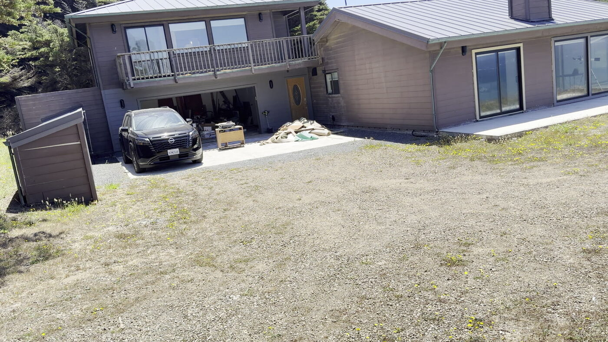
Driveway — todaybare compacted dirt, spilling out with no defined edge
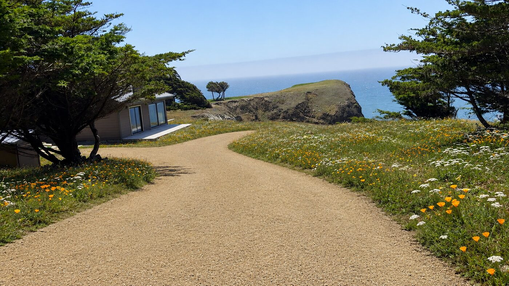
Driveway — narrowed & surfaceda defined DG drive with meadow reclaiming both sides — not a fully paved turnaround
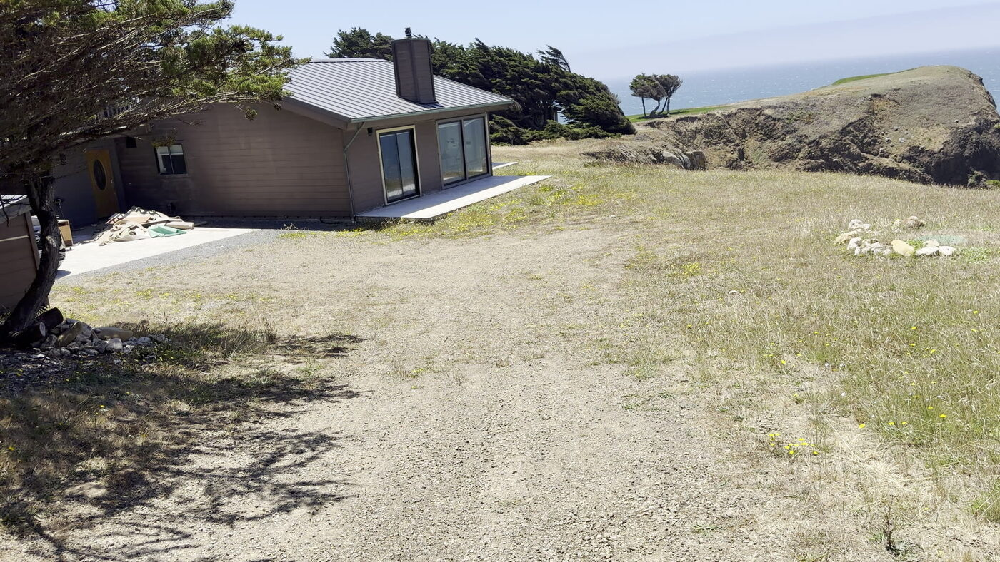
Vehicle turnaround — todaybare dirt, still needs to park cars
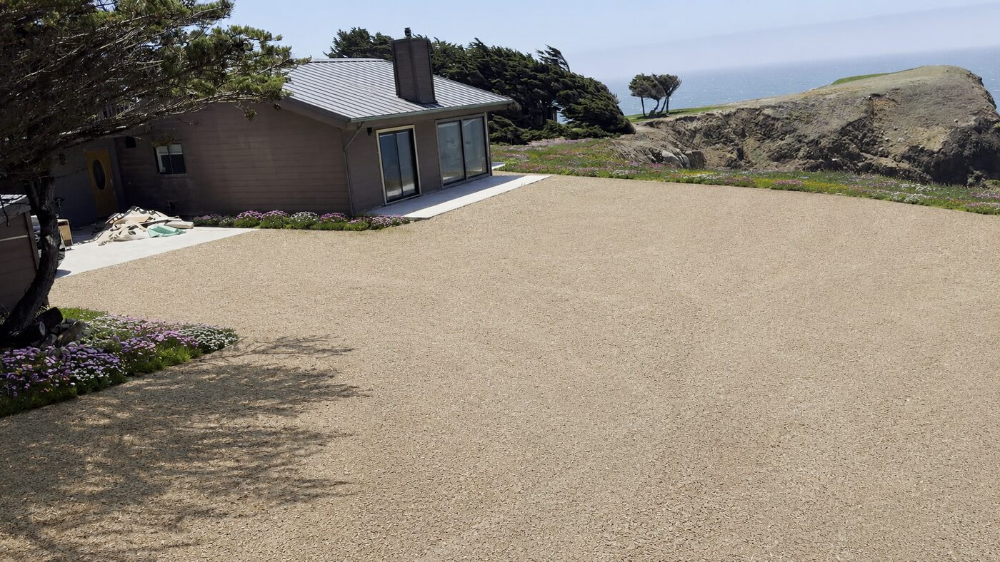
Turnaround — surfacedfull gravel for cars; plants only at house + tree-line edges
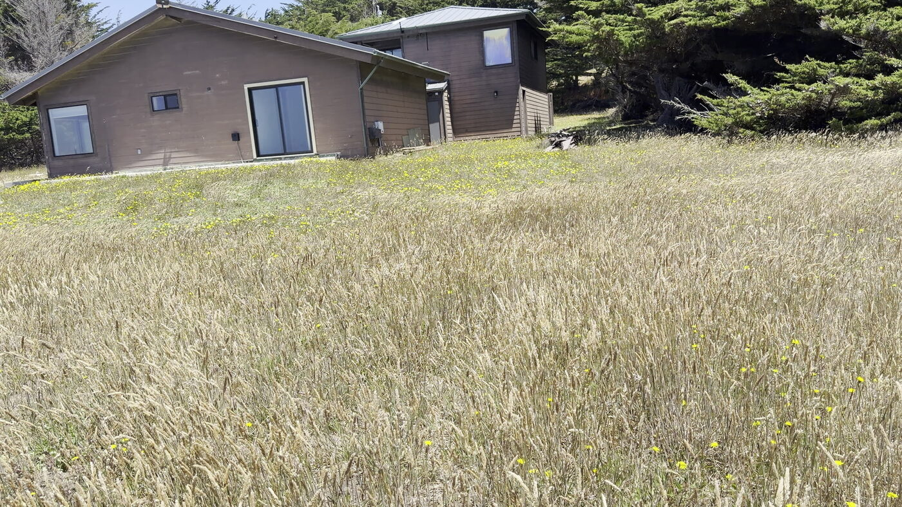
Back yard — todaytall dry grass to the tree line
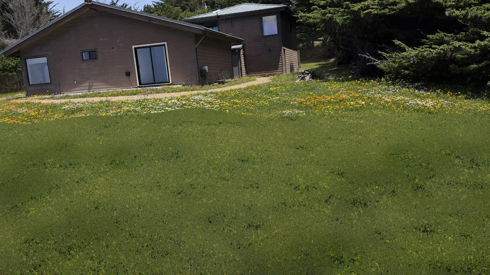
Back yard — mowed native lawnturf-cut sedge/bentgrass lawn; flowers held in defined beds at the house + tree line (Plan 6)
#11 Fragrant Herb Bankcoyote mint, rosemary, sagebrush, daisy
The four seasons — do we have flowers year-round?
Short answer: yes, nearly — but not evenly. Your fog-cooled, nearly frost-free coast is unusually generous. Spring is the peak; summer and fall stay colorful; winter is the quiet one — fewer flowers, but never bare. It reads as evergreen texture, silver foliage, red berries and a few winter bloomers. The trick is deliberately including the fall/winter performers, not just the spring stars. All four views below are the same back yard.
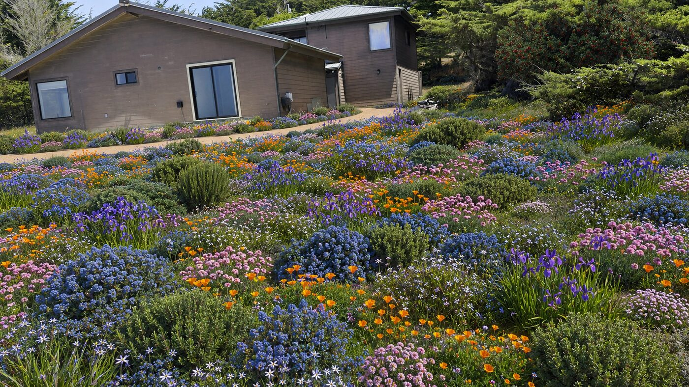
Spring (Mar–May) — the peakCeanothus blue, Douglas iris, poppies, sea thrift, blue-eyed grass
Fall (Sep–Nov)California fuchsia scarlet, coast aster, gumplant; buckwheat ages to rust
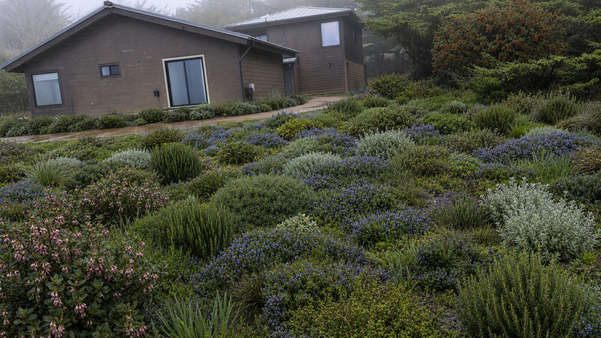
Winter (Dec–Feb) — the quiet oneEvergreen mounds, silver foliage, rosemary blue, manzanita bells, toyon berries; lush from rain
Who carries each seasonSpring: ceanothus, Douglas iris, California poppy, sea thrift, blue-eyed grass, beach strawberry. Summer: seaside daisy, yarrow, coyote mint, sticky monkeyflower, coast buckwheat, woolly sunflower. Fall: California fuchsia, coast aster, gumplant. Winter: prostrate rosemary (blue), manzanita/kinnikinnick (pink bells), coast silk tassel (catkins), toyon (red berries) — plus every evergreen mound and silver leaf in the garden.
If you want the fullest year: make sure your plan includes at least California fuchsia + coast aster (for fall) and rosemary + manzanita + toyon (for winter). Skip those and the garden really does go flat from October to March.
Plant guide — what each plant actually looks like
Every plant named anywhere in this document, with a photo. All are wind- and salt-tolerant, deer-resistant, and need no irrigation once established. Grouped by the job they do in the garden.
Flowers & low perennials — the color
Groundcovers & mats — the carpet, erosion control
Succulents — for rock pockets & sharp drainage
Grasses & grass-like — the meadow base & texture
Shrubs — windbreak, screening, structure
Palette library — 12 options
Every palette below is wind- and salt-tolerant, deer-resistant, and needs no irrigation once established (hand-water the first summer only). Mix and match freely — any of these works in the meadow, the yards around the house, or the bluff strip. Very low = plant it and largely leave it; one annual cut or mow. Low = the above plus occasional deadheading/shearing, or dividing every few years.
1 · Coastal Meadow
Wild golden prairie that ripples in the wind.
Very low
Red fescue 'Molate' Festuca rubra
Dune sedge Carex pansa
California poppy Eschscholzia californica
Yarrow Achillea millefolium
Blue-eyed grass Sisyrinchium bellum
2 · Warm Pollinator
Hot oranges and purples; hummingbird & bee magnet.
Low
California fuchsia Epilobium canum
Sticky monkeyflower Diplacus aurantiacus
Coast aster Symphyotrichum chilense
Seaside daisy Erigeron glaucus
Yarrow Achillea millefolium
3 · Silver & Yellow
Architectural succulents in a dry, sculptural bed.
Palettes 2 (warm) and 3 (silver & yellow) are shown rendered on your house above. I can render any of the others on your actual yards too — just name the numbers.
1Coastal Meadow
Lowest costMow 1–2x/yrSeed + plugs
The whole open bluff becomes a native grass meadow with wildflower drifts, and the only "maintenance" is an annual mow. Mown paths wander to the cliff for that Sea Ranch look. Best if you want the lot to read as wild coastal prairie.
Core plants
Red fescue 'Molate' — Festuca rubra · the meadow base, from seed
Dune sedge — Carex pansa · walkable green mat, from plugs
California poppy — Eschscholzia californica · orange, self-sows from seed
Yarrow — Achillea millefolium · white, deer-proof
Blue-eyed grass — Sisyrinchium bellum · spring color
Swap options (same criteria)Finer base: Idaho fescue (Festuca idahoensis) for a bluer, finer texture. Longer bloom: add Santa Barbara daisy (Erigeron karvinskianus) and seaside daisy for near year-round flowers. Late season: coast aster or coyote mint for lavender in fall. Hummingbirds: California fuchsia (Epilobium canum) for orange late-summer color.
Get it: Molate fescue seed + Carex plugs special-ordered through Gualala Nursery & Trading Co; wildflower seed and soil amendment at Gualala Building Supply.
2Bluff Rock Garden
Most rockNear-zero upkeepFire-wise
Gravel and cobble replace most of the grass: decomposed-granite ground plane, drifts of beach cobble, boulder groups echoing your offshore sea stacks, and planting pockets of bluff succulents and cushion perennials. Nothing to mow, nothing to water.
Core plants & materials
Bluff lettuce — Dudleya farinosa · powdery succulent, grows wild on your cliffs
Pacific stonecrop — Sedum spathulifolium · low silver-green mat
Sea thrift — Armeria maritima · pink cushions
Seaside daisy — Erigeron glaucus · lavender, long bloom
Decomposed granite — 3/8"-minus · path & ground plane · river/beach cobble 3–8" drifts · quarry boulders set 1/3-buried in odd-number groups
Swap options (same criteria)Longest bloom: 'Wayne Roderick' daisy flowers most of the year on the coast. Yellow accent: seaside woolly sunflower (Eriophyllum staechadifolium), very salt-tough. Winter color: prostrate rosemary loves the wind and blooms when natives rest. Fragrance: coyote mint (Monardella villosa).
Get it: DG, cobble and drain rock delivered in bulk by Gravel Monkey or Hello Gravel; boulders special-ordered through Gualala Building Supply; succulents/perennials at Gualala Nursery.
3Dry Creek Canyon
Solves winter runoffMed. costRock + plants
The natural drainage line from the driveway to the cove becomes the centerpiece: a broad cobble creek bed with boulder bends and a timber crossing, banks planted with rushes, iris and monkeyflower. The rest stays simple mowed meadow.
Scale note: at your true lot size this is a short 30–60 ft cobble swale along the existing runoff line near the NW corner — not a full creek. Most of the stone can come from the cobble pile already on site.
Core plants & materials
California gray rush — Juncus patens · vertical accent on the banks
Douglas iris — Iris douglasiana · purple, grows wild near Salt Point
Sticky monkeyflower — Diplacus aurantiacus · orange, long bloom
Drain rock 3/4" base · river cobble top dressing · boulders at the bends
Swap options (same criteria)More flower color: Pacific Coast Hybrid iris come in many shades and are just as tough as Douglas iris. Drier banks: coast aster or seaside daisy. Grass alternative: deer grass (Muhlenbergia rigens) or California fescue for a tidier tussock.
Get it: drain rock + cobble in bulk from Gravel Monkey / Hello Gravel; filter fabric and timbers at Gualala Building Supply; bank plants at Gualala Nursery.
4Sheltered Garden Rooms
Uses fill dirtMost livableBerms + shrubs
Imported fill builds two low berms (18–36") on the windward side, planted with tough evergreen natives. Behind them: a calm gravel-floor sitting room with boulder seats and a sunning lawn circle. This is the plan if you actually want to sit outside on a windy bluff.
Scale note: at your true lot size this is one small sitting circle in the side or back yard (inland of the house), sheltered by a short berm — not on the 20-ft ocean strip.
Core plants & materials
Pt. Reyes ceanothus — Ceanothus gloriosus · blue-flowering mat on the berm faces
Toyon — Heteromeles arbutifolia · evergreen screen + red berries
Pea gravel — sitting-room floor
Swap options (same criteria)Windbreak infill: Pacific wax myrtle (Morella californica) or coffeeberry 'Eve Case' (Frangula californica) — fast, dense, bird-friendly. Color: bush monkeyflower for orange bloom. Part shade near trees: California huckleberry (Vaccinium ovatum). Lowest mounds: coyote brush 'Twin Peaks'.
Get it: fill dirt + topsoil delivered (Gravel Monkey / Hello Gravel, or ask Gualala Building Supply for local dirt); shrubs in 1-gal at Gualala Nursery. Note: grading/fill near the bluff edge can trigger a Mendocino County coastal permit — keep berms on the inland half or check first.
5Overlook Trail & Groundcover Carpet
Best viewsErosion controlDG + mats
A decomposed-granite loop trail links two bench overlooks — one above the cove, one at the south point. Everything between is carpeted in knee-high-or-lower evergreen mats that knit the bluff together and never need pruning. A cobble fire-wise band wraps the house.
Scale note: the ocean-side strip is only ~20 ft (patio to cliff) — groundcover only there. The short DG path and bench live on the inland and side yards instead.
Core plants & materials
Beach strawberry — Fragaria chiloensis · glossy fast carpet
Pt. Reyes ceanothus — Ceanothus gloriosus · blue-flowering mat
Decomposed granite 4' compacted trail · cobble fire-wise band at the house
Swap options (same criteria)Fragrant mats: yerba buena (Clinopodium douglasii) or coyote mint instead of some strawberry. Flower: weave in coast aster and seaside daisy for color through the carpet. Tighter accents: Idaho fescue tufts where deer grass would be too big.
Get it: DG + cobble bulk-delivered (Gravel Monkey / Hello Gravel); flats of groundcover at Gualala Nursery (or Mostly Natives in Tomales for the best selection); benches/timber at Gualala Building Supply.
6Mowed Native Lawn
Real lawn lookMow every 2 weeksPlugs or native sod
Yes — a few California natives genuinely mow into a lawn. Stretches of the yard become tight green turf you cut a couple of times a month, and all the flowers move to borders along the edges — tree line, house foundation, driveway. Dune sedge (Carex pansa) is the classic coastal choice: mowed every ~2 weeks at 2½–3½" it reads as a true lawn, and it's native to exactly this kind of sandy, salt-blasted coast. Native bentgrass (Agrostis pallens) does the same and is sold as native sod for an instant lawn. Both take foot traffic, need no fertilizer, and use a fraction of a conventional lawn's water — a deep soak every week or two in summer keeps them green on the bluff (skip it and they go summer-blond like the meadow, then green up with the rains). The 20-ft cliff strip stays unmowed groundcover mats — never run a mower at the bluff edge.
Core plants
Dune sedge — Carex pansa · the lawn itself; plugs 6–8" apart, knits solid in 1–2 seasons
Native bentgrass — Agrostis pallens · the lawn from native sod — instant, mows beautifully
Clustered field sedge — Carex praegracilis · toughest-traffic sedge lawn alternative
Yarrow — Achillea millefolium · border filler; also tolerates mowing blended INTO the lawn
California poppy + coyote mint — Eschscholzia · Monardella · border color spring–fall
Lawn options, honestly comparedNative sod (Agrostis pallens, or red-fescue "mow free" blends) — finished lawn the day it's laid; the priciest option; order from a native-sod grower for delivery after site prep. Plugs (Carex pansa/praegracilis) — a fraction of the cost; looks patchy the first season, solid by the second. Seed ('Molate' red fescue) — cheapest; shaggier meadow-lawn that prefers 3–4" height and monthly cuts, not a tight turf look. Mowing reality: rotary mower at its highest setting, every 2 weeks in the growing season; never scalp below ~2½".
Get it: Carex plugs + border flowers in 4" pots special-ordered through Gualala Nursery & Trading Co; native sod ships refrigerated from Central Valley growers (e.g., Delta Bluegrass) — schedule delivery for the week after the ground is cleared and raked.
Site prep, soil, permits & planting
Bottom line: plant into your existing soil, don't add topsoil or compost, clear the weed seed bank before planting — and no permit is needed to plant, but moving dirt near the bluff probably needs one.
Do we need to add soil?
Almost certainly not. California coastal natives evolved for exactly what you have — thin, sandy/rocky, lean bluff soil with good drainage. Amending with compost or fertilizer makes results worse (floppy growth, rot, weed flush). Plant the meadow and all flower palettes straight into the native ground, no fertilizer.
Quick soil check: dig a hole ~1 ft deep, fill with water — if it drains within a few hours, you're good (on a windy sandy bluff it almost always does).
Where you DO bring in materialBerms / raised mounds (Plan 4, or to lift succulents) — import fill + a little topsoil to build the shape. Succulents (Dudleya, stonecrop) — mix coarse gravel/sand into just the planting pocket for sharp drainage. Gravel or DG "mulch" on beds — not to feed plants, but to suppress weeds and keep roots cool (bark blows away in the wind; use rock). Driveway — road base + DG, not soil.
Do I need a permit?
Your lot is in the Mendocino County Coastal Zone, and the Highway 1 corridor is a designated Highly Scenic Area — so the rules are stricter than inland. In the coastal code, "development" is defined broadly and explicitly includes grading and removal of major vegetation. For this project:
Activity
Permit?
Notes
Planting & seeding
No
Putting plants in the ground, sowing a native meadow, gravel mulch — ordinary gardening, not "development."
Removing the invasive iceplant
No
This is restoration, not major vegetation removal. Just don't destabilize the bluff face doing it.
Cutting the cypress
Ask first
Don't. Mature trees likely count as "major vegetation" — removal in the coastal zone typically needs review. The County has a Major Vegetation Removal Questionnaire for this.
Berms / imported fill / any earthmoving (Phase 4)
Probably yes
Grading in the coastal zone generally requires a Coastal Development Permit, plus possibly a county grading permit depending on volume. Assume yes near the bluff edge.
Driveway resurfacing
Gray area
Re-surfacing the existing footprint reads as repair/maintenance (usually exempt); regrading or widening can tip into "development." Worth one phone call.
What to actually do: call Mendocino County Planning & Building Services, describe the project, and ask whether you need a CDP or qualify under a Categorical Exclusion. They handle this daily and will usually confirm the planting is fine and only the grading needs review. Confirm before you move any dirt — this document is not a permitting authority.
How to actually plant them
Plant in fall, after the first real rains (Oct–Nov). For each plant:
Dig a hole twice as wide as the pot, but no deeper. The crown (where stem meets roots) must sit at or slightly above grade. Burying the crown is the #1 killer of California natives.
Don't amend the hole. Backfill with the same native soil you dug out — no compost, no fertilizer.
Set a gopher basket in the hole first and plant inside it.
Gently loosen any roots circling the root ball, set the plant in, backfill, firm the soil by hand.
Water deeply once at planting to settle soil around the roots — even if rain is coming.
Top with gravel/DG mulch, but keep mulch off the stem.
Then deep, infrequent water (every 2–3 weeks) through the first summer only. After that, stop — these plants resent summer water once established.
SpacingGive plants their mature size: groundcovers ~2–3 ft apart, perennials ~1.5–2 ft. It will look sparse the first year — that's correct.
Can I use seed to save money?
Yes — for some things, and the savings are large: seeding a meadow runs roughly $0.10–0.30/sq ft versus $8–15/sq ft for installed planting. But seed only works for certain plants.
Method
Use it for
Why
Seed cheapest
Molate red fescue meadow, California poppy, yarrow, lupine, gumplant, tidy tips, clarkia
Germinates readily; ideal for broad areas and wildflower drifts.
Establish fast and hold a slope; sedge seed is unreliable.
1-gallon priciest
Shrubs (toyon, coffeeberry, silk tassel, wax myrtle) and key perennials in the beds by the house
Woody plants are slow/erratic from seed — many need scarification or smoke treatment. Dudleya from seed takes years.
The money-smart hybrid:seed the broad meadow and wildflower drifts · plugs for the groundcover mats and the cliff-edge strip · 1-gal only for shrubs and the beds you see from the house. Two catches with seed: you must run the grow-and-kill weed cycle first or weeds will outrun your natives, and seed takes 2–3 years to look full. That's why the erosion-control strip gets plugs, not seed.
How to clear the existing plants
The key is killing the weed seed bank, not just pulling tops — the dry annual grass re-sprouts from seed otherwise. Chemical-free sequence, done late summer before fall planting:
Mow it low first.
Sod-cut or scrape the top 1–2" (rent a sod cutter) to strip the root mat and seed-laden surface — fast for turning grass into a bed. Or for beds, sheet-mulch: cardboard + several inches of gravel/mulch to smother grass over a couple months.
For a meadow, run the "grow-and-kill" cycle: water to sprout weed seeds, then hoe or flame the seedlings; repeat 2–3 times. Each pass empties the seed bank so natives aren't swamped. Then sow native seed with the first rains.
Don't rototill deeply — it drags up more buried weed seed.
Iceplant at the cliff pulls up as a mat — remove every fragment (it re-roots from pieces) and bag it; don't compost.
Keep the cypress and their needle litter — free mulch, and the roots hold the bluff.
Know your target — what iceplant looks like
Highway iceplant (Carpobrotus edulis) — the invasive succulent to remove at the cliff edge. Fleshy three-sided "fingers" (often red-tipped in sun) in dense mats that smother everything; big silky flowers from pale yellow to magenta.
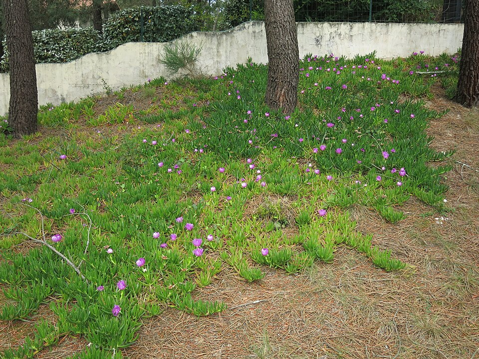
The matdense carpet that smothers everything beneath it
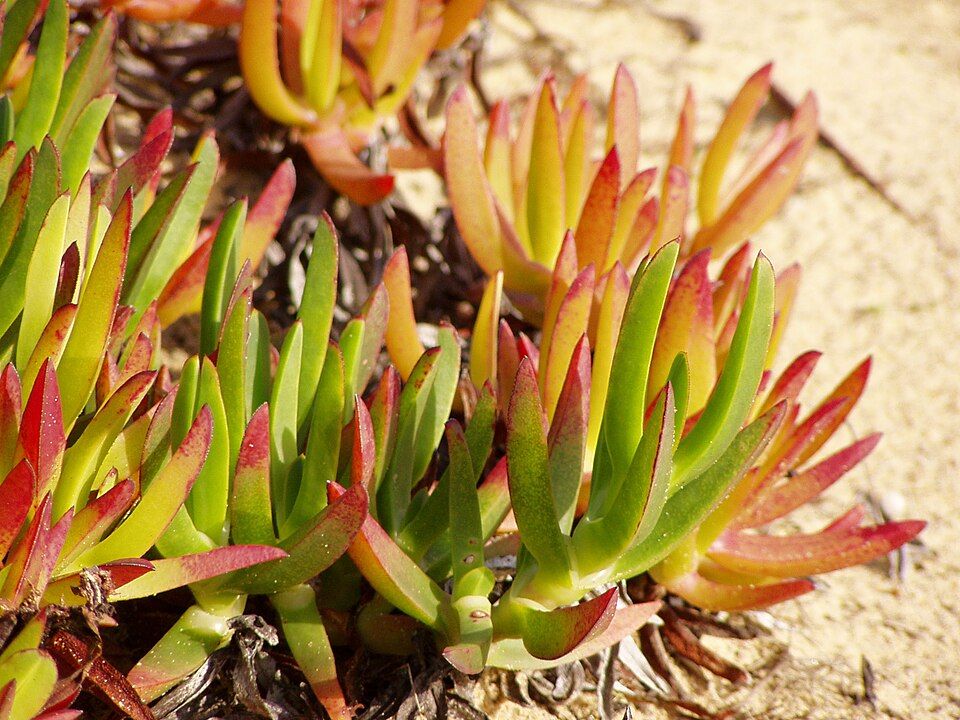
The leavesfleshy 3-sided fingers, red-tipped in sun
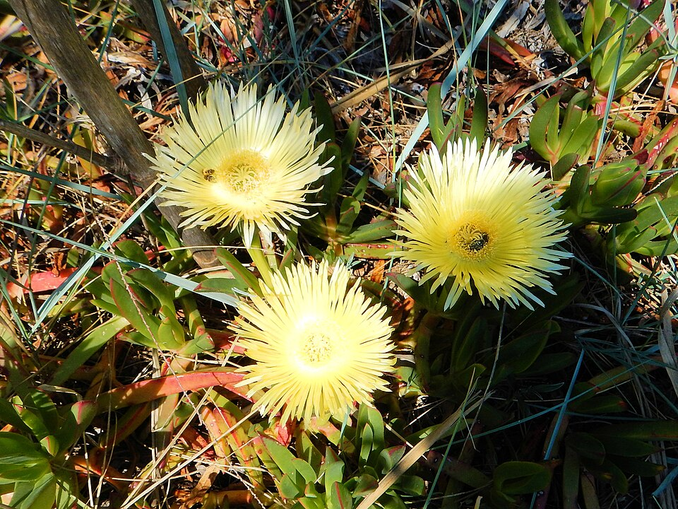
The flowersilky many-petaled, pale yellow to magenta
Don't confuse it with the native bluff lettuce (Dudleya) in the plant guide below — Dudleya grows as separate powdery blue-grey rosettes, not a running mat, and stays.
Timing: clear in late summer, plant Oct–Nov so winter rain establishes everything for free. Use gopher baskets around new plants regardless of clearing.
Phased plan — DIY-first, over several years
Sequenced so each year is a manageable chunk, early phases are cheap and high-impact, and you only contract the few jobs that really need machinery or a permit. Everything else is DIY. Each phase is timed for late-summer prep + fall planting so winter rain does the watering.
Phase 0 · This fall — prep & the big cheap win
Clear weeds, kill the iceplant, seed the meadow
Late summer clearing → sow with first rains (Oct–Nov)
DIYRemove the invasive iceplant at the cliff edge (roll up the mat, bag every fragment). Mow the open lot low; rent a sod cutter or run the "grow-and-kill" weed cycle on the areas you'll plant.
DIYBroadcast-seed the open meadow (Molate fescue + wildflowers) into the cleared ground. Biggest visual change for the least money.
Contract / rentSod-cutter and (optional) a day of help hauling iceplant — otherwise all DIY.
Phase total: $1,500–4,000 · mostly seed, plugs, and a tool rental.
Phase 1 · Year 1 — the functional fix + first flowers
Surface the driveway; plant the yards you see & use
Driveway any dry season; beds planted the following fall
ContractDriveway base: first decide the driveway's actual footprint — narrow it to a defined drive plus a modest parking apron at the carport, rather than surfacing the whole spreading dirt area. Then grade + lay/compact Class II road base over just that footprint (needs a skid steer + roller — the one job worth hiring). Less area = less cost.
DIYSpread and compact the 3/8"-minus DG top coat and set a clean edge (steel, timber, or a cobble band) so the drive holds its shape.
DIYLet the meadow/wildflowers reclaim the leftover dirt on both sides of the new drive — that's what turns it from a parking lot into a driveway through a garden.
DIYPlant the back yard + one side yard beds from 1-gal/plugs (pick a flower palette), with gopher baskets and a gravel mulch band along the house.
Phase total: $4,000–9,000 · driveway base is the main contracted line item (cheaper now that the drive is narrowed).
Phase 2 · Year 2 — hold the edge, spread the color
Cliff-edge groundcover mats + expand wildflowers
Plant in fall
DIYPlant low native mats (ceanothus, manzanita, beach strawberry) along the ~20 ft bluff strip for erosion control — all hand-planted, no machinery.
DIYOverseed / plug more wildflower drifts into the meadow and fill gaps in the Year-1 beds.
Phase total: $2,000–4,000 · all DIY planting.
Phase 3 · Year 3 — rock & structure
Dry-creek swale, boulder groups, fire-wise cobble band
Dry season for rock work
DIYBuild the short cobble swale along the runoff line using the cobble pile already on site; lay a cobble fire-wise band around the house.
Contract / rentSetting the large boulders (needs a machine) — a half-day with a mini-excavator or a landscaper.
DIYPlant swale banks with rush, iris, and monkeyflower.
Phase total: $3,000–7,000 · boulder-setting is the only contracted bit.
Phase 4 · Year 4+ — the living spaces & finishing touches
Sheltered sitting area, herb bank, overlook bench
Spread over one or more seasons as budget allows
ContractImport fill for the low berms and check whether any grading falls in the coastal-bluff setback (may need a Mendocino County permit).
DIYShape the berms, spread the pea-gravel sitting floor, plant the sheltering shrubs and a fragrant herb bank, set a bench at the overlook, and lay a short DG path on the inland side.
Phase total: $6,000–13,000 · fill delivery + any permit are the contracted parts.
Phase
What you get
Cost
Phase 0 · this fall
Weeds cleared, iceplant gone, meadow seeded
$1,500–4,000
Phase 1 · Year 1
Driveway narrowed & surfaced; first flower yards planted
$4,000–9,000
Phase 2 · Year 2
Cliff-edge groundcover mats; wildflowers expanded
$2,000–4,000
Phase 3 · Year 3
Dry-creek swale, boulders, fire-wise cobble band
$3,000–7,000
Phase 4 · Year 4+
Sheltered sitting area, herb bank, overlook bench
$6,000–13,000
TOTAL over ~4–5 years
The whole property, done gradually
$16,500–37,000
Versus roughly $70,000–150,000+ if the same scope were fully contractor-installed in one go. Spreading it over years is what makes it affordable — and each phase stands on its own.
Woven through every year: hand-water new plants through their first summer only, weed around them the first two summers while they establish, and mow the meadow once (late spring). After that it's essentially self-sustaining.
Rough cost estimates
Ballpark 2026 ranges for the coastal Mendocino area, materials + labor. DIY = you buy materials in bulk and do the work (plant in fall from 1-gal/plugs, rent a compactor, etc.). Contractor = installed by a landscape crew at typical NorCal rates ($8–20/sq ft for native/drought planting, $2–8/sq ft for DG). Rural delivery, boulder-setting, and any bluff-setback permit add cost. These are planning numbers only — get local bids before budgeting.
Element
Assumed scope
DIY
Contractor
Driveway surfaceDG over Class II base
Narrowed drive + parking apron (~1,200–1,800 sq ft), not the full spreading dirt area; keep concrete pad. Meadow reclaims the rest.
$1,800–3,200
$4,000–9,000
Plan 1 · Coastal Meadow
Seed + plugs over the open lot (~8–12k sq ft), annual mow
$1,500–4,000
$8,000–20,000
Plan 2 · Bluff Rock Garden
~2,500 sq ft DG + cobble + boulders + succulents
$6,000–12,000
$25,000–50,000
Plan 3 · Dry Creek
Short 30–60 ft cobble swale (uses your on-site cobble)
$1,500–3,500
$4,000–9,000
Plan 4 · Sheltered Garden Rooms
Fill berms + pea-gravel sitting area + shrubs
$3,000–6,000
$10,000–20,000+ possible coastal permit
Plan 5 · Overlook Trail + Groundcover
DG path + ~2,500 sq ft evergreen mats + cobble band
$4,000–8,000
$18,000–35,000
Plan 6 · Mowed Native Lawn
~4–6k sq ft dune-sedge/bentgrass lawn (plugs or native sod), flower borders extra
$4,000–12,000
$18,000–40,000
Flower palette planting(any of the 12, per yard)
~1,500–2,500 sq ft of perennials from 1-gal/plugs
$3,000–7,000
$15,000–40,000
Note: the plans are alternatives, not a checklist — you wouldn't build all of them. A realistic combined build (driveway + meadow + flower beds + cliff-edge mats + dry creek) totals about $12,000–25,000 DIY / $45,000–95,000 contracted. See the phased plan for what that looks like year by year.
Where the money goes / how to save: planting from small stock in fall (not big containers) and buying DG, cobble and drain rock in bulk are the biggest DIY savings. Hire out the parts that need equipment — driveway base compaction and setting large boulders. The meadow + driveway combo is the highest-impact, lowest-cost starting point; the rock garden and full groundcover carpets are the priciest. Anything involving grading or fill within the coastal bluff setback may need a Mendocino County permit (budget a few hundred to low thousands for that).
Plain-English glossary
Every bit of jargon used in this document, decoded.
DG (decomposed granite)
Granite that has naturally weathered and crumbled into a mix of coarse sand and small gravel — tan/gold, gritty. It's the classic surface for garden paths and park trails.
3/8"-minus
A gravel/DG spec meaning the particles range from 3/8 inch down to fine dust. Those fines are the point: when you spread it, wet it and compact it, the dust fills the gaps and the whole thing locks into a firm surface. Plain gravel without fines just scatters underfoot and under tires.
DG top coat
The final 1–2" wearing layer of DG spread over the compacted base rock, then dampened and rolled firm. The base gives strength; the DG gives you the finished drivable/walkable surface.
Stabilized DG
DG pre-mixed with a binder so it sets harder and resists washing out. Costs more — worth it on your windy, rainy site.
Class II road base (aggregate base)
The engineered crushed-rock layer that goes under a driveway surface. It's what carries the weight of cars and stops ruts. Typically 3–4" deep, compacted, then topped with DG.
Plate compactor
A rentable machine (like a vibrating steel plate you walk behind) that packs loose rock down solid. Rent one for a day to finish the driveway and paths.
Plugs
Very small young plants (a couple inches across) sold in trays — the cheap way to plant grasses and groundcovers over a big area. They establish faster than big plants and cost a fraction.
1-gallon (1-gal)
A standard nursery pot size. For a windy bluff, small plants (plugs or 1-gal) actually outperform big showy containers — they root in and anchor better.
Sod cutter
A rentable machine that slices off the top 1–2" of turf and roots in strips, like peeling a carpet. The fastest way to clear grass before planting.
Weed seed bank
The reservoir of dormant weed seeds already sitting in your soil. Pulling the tops doesn't touch it — this is why weeds come right back, and why clearing has to target the seeds.
"Grow-and-kill" cycle
Deliberately watering bare ground to make the weed seeds sprout, then killing the seedlings (hoe or flame). Repeat 2–3 times to drain the seed bank before you sow your natives, so they aren't swamped.
Sheet mulching
Smothering grass by laying cardboard over it and covering with several inches of mulch or gravel. Takes a couple of months, no digging, no chemicals.
Gopher basket
A wire cage you plant into, so gophers can't eat the roots. Cheap insurance — losing established plants to gophers is the most common way these gardens fail.
Groundcover / mat
A low, spreading plant that knits together into a continuous carpet. On a bluff they double as erosion control — the roots hold the soil.
Drift
A loose, natural-looking sweep of one plant repeated — rather than dotting single plants around. Drifts are what make a planting read as a landscape instead of a collection.
Fire-wise band
A strip of non-flammable material (here, cobble/gravel) laid right around the base of the house so nothing burnable touches the walls.
Berm
A low mound of imported soil, shaped to deflect wind up and over the plants sheltering behind it.
Swale
A shallow drainage channel. Lined with cobble, it becomes an attractive "dry creek" that carries winter runoff without eroding.
Cobble
Rounded stones roughly 3–8" across (river- or beach-worn). Used for dry creeks and mulch bands. You already have a pile on site.
Drain rock
Clean crushed rock (~3/4") with no fines, used under cobble in a creek bed so water moves through freely.
Coastal bluff setback
A protected zone near the cliff edge where grading, fill, or structures may require a Mendocino County coastal permit. Planting is generally fine; moving earth is what triggers review.
Establishment period
The first year or two after planting, when new plants still need occasional water and weeding. After that these species are on their own — no irrigation.
Suppliers: Gualala Building Supply (38501 S Hwy 1) · Gualala Nursery & Trading Co (38860 S Hwy 1) · Gravel Monkey · Hello Gravel · Mostly Natives Nursery, Tomales.
Before/after images are AI edits of your actual walkthrough-video frames (ChatGPT, July 2026), stored in the renders/ folder next to this file — keep them together when moving or sharing.
All plants shown are wind- and salt-tolerant, deer-resistant, and need no irrigation once established. Plant from 1-gal/plugs in fall, use gopher baskets, and hand-water only through the first summer.
Permit info summarized from Mendocino County Coastal Zone Information, Coastal Development Permits, and Categorical Exclusions — confirm your specific project with County Planning & Building Services before moving earth.